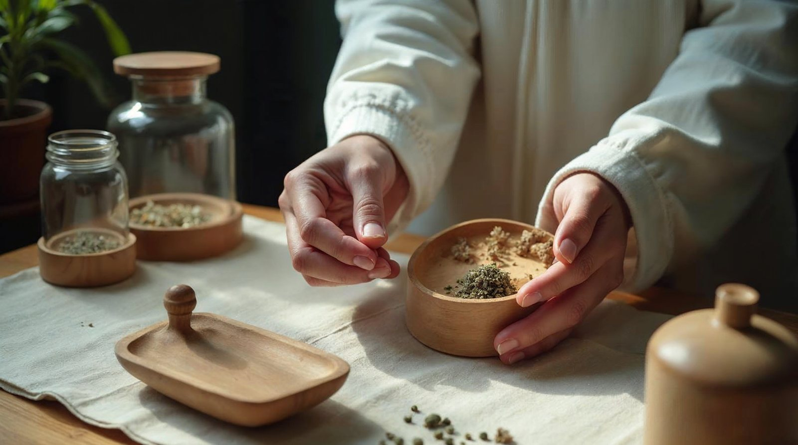
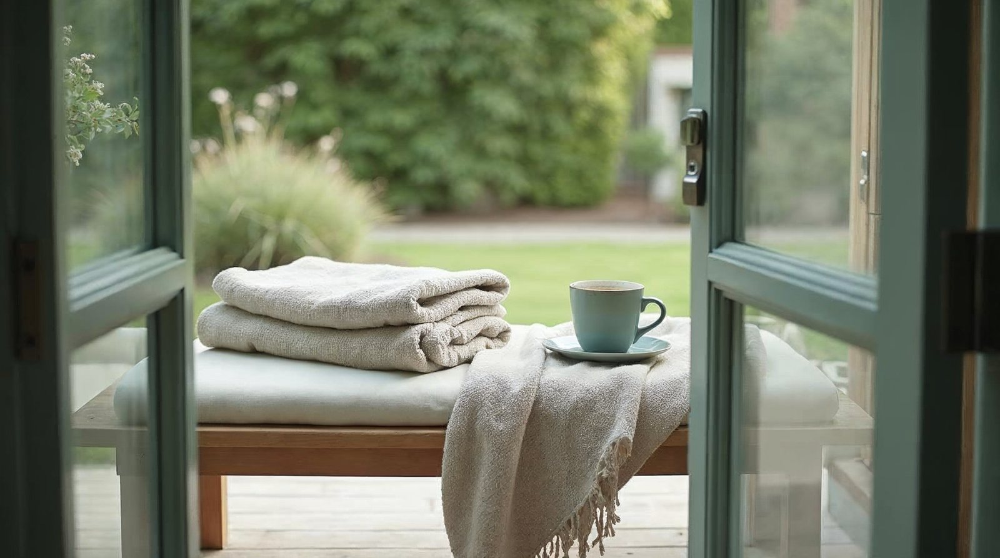

이종호 한의사 감수좋은꿈참사랑한의원 대표원장 (한의사 면허번호 19769)발행 2026-11-23 · 수정 2026-11-26
이 글의 차례
- 왜 이런 불편이 생길 수 있나요
- 왜 돌보는 사람은 자기 몸을 뒤로 미루게 될까요?
- 돌봄 피로는 보통의 피로와 어떻게 다른가요?
- 이런 돌봄 장면이 반복되고 있지 않나요?
- 스스로 점검해 보세요
- 먼저 이렇게 여쭙니다
- 일상에서 먼저 해 볼 수 있는 것
- 허리와 어깨를 덜 쓰며 돌보는 방법은 무엇인가요?
- 쪼개진 잠은 어떻게 챙길 수 있나요?
- 얼마나 지켜보고 언제 상담할까요?
- 돌보는 분께 자주 보이는 몸의 변화는 무엇인가요?
- 돌봄을 나눌 수 있는 곳은 어디인가요?
- 짧은 틈에 마음을 내려놓는 방법이 있을까요?
- 한의원에서 함께 살필 수 있는 경우
- 환자에게 화를 내고 자책하게 될 때는 어떻게 하나요?
- 일과 돌봄을 함께 하는 분은 무엇을 챙겨야 할까요?
- 돌봄이 줄어든 뒤에도 피로가 남을 수 있나요?
- 이렇게 기록해 오시면 상담이 쉬워집니다
- 이런 증상은 먼저 확인이 필요합니다
아픈 가족을 오래 돌보며 몸과 마음이 지쳤다면, 돌봄 일과와 쉬는 시간, 밤에 깨는 일, 몸에서 아픈 곳과 마음의 부담을 먼저 묻고 함께 살핍니다. 돌보는 분이 먼저 쓰러지지 않도록, 돌봄을 나눌 수 있는 제도와 연락처도 함께 찾아봅니다.
부모님이나 배우자를 오래 돌보는 분들은 '내가 아프면 안 된다'며 자신의 불편을 미루고, 밤에도 자주 깨며 허리와 어깨가 늘 아프다고 하십니다.
왜 이런 불편이 생길 수 있나요
- 돌봄이 길어지면 쉬는 시간이 거의 없어 피로가 회복되지 못한 채 쌓입니다.
- 밤에도 환자를 살피느라 잠이 쪼개지면 낮의 예민함과 무기력이 커질 수 있습니다.
- 환자를 일으키고 옮기는 동작이 반복되면 허리와 어깨, 손목에 부담이 몰립니다.
- 자신의 끼니와 진료를 뒤로 미루는 생활이 길어지면 우울감으로 이어지기도 해, 돌보는 분 자신의 상태도 살펴야 합니다.
왜 돌보는 사람은 자기 몸을 뒤로 미루게 될까요?
돌봄은 끝나는 시각이 없는 일입니다. 출근한 일은 퇴근하면 손을 놓을 수 있지만, 가족을 돌보는 일은 밤에도 주말에도 이어집니다. 그래서 내 몸의 불편은 늘 '나중에'로 밀리고, 그 나중이 몇 달, 몇 년이 되기도 합니다.
아픈 가족 앞에서 내가 힘들다고 말하는 것이 미안하게 느껴지는 마음도 큽니다. 환자에 비하면 내 허리 통증쯤은 아무것도 아니라고 여기며 참는 사이, 작은 통증이 굳어 버리고 잠이 쪼개진 채로 굳어집니다.
돌봄을 혼자 맡고 있다면 부담은 더 커집니다. 형제나 다른 가족이 멀리 살거나 바빠서 사실상 한 사람이 모든 일을 떠안는 경우가 많고, 이때 쌓이는 서운함과 외로움도 몸의 피로만큼 무겁습니다.
언제 끝날지 모른다는 것도 큰 짐입니다. 기한이 정해진 일은 '조금만 더'라고 버틸 수 있지만, 돌봄은 끝을 알 수 없어 힘을 나눠 쓰기가 어렵습니다. 처음 몇 달은 온 힘을 다하다가, 시간이 지나며 몸이 먼저 지쳐 버리는 흐름을 자주 봅니다. 그래서 돌봄은 단거리가 아니라 오래 걷는 길이라 여기고, 처음부터 쉬는 자리를 마련해 두시길 권합니다.
돌봄 피로는 보통의 피로와 어떻게 다른가요?
보통의 피로는 하루 이틀 푹 쉬면 가벼워집니다. 돌봄 피로는 쉬는 날 자체가 없어 회복할 틈이 없다는 점이 다릅니다. 어쩌다 쉬는 날이 생겨도 환자 걱정에 마음이 놓이지 않아 몸만 쉬고 머리는 계속 일하는 상태가 됩니다.
예를 들어 다른 가족이 하루 대신 돌봐 준 날에도 잠이 오지 않고, 휴대폰을 계속 확인하게 된다면 몸과 마음이 긴장한 채로 굳어 있는 것일 수 있습니다. 이 긴장이 길어지면 사소한 일에도 눈물이 나거나 환자에게 날카롭게 말하고 나서 자책하는 일이 늘어납니다.
그래서 돌봄 피로를 볼 때는 몇 시간 잤는지보다 언제 마지막으로 마음 놓고 쉬었는지를 여쭙습니다. 이 질문에 쉽게 답하지 못하신다면 그것이 지금 상태를 보여 주는 단서입니다.
이런 돌봄 장면이 반복되고 있지 않나요?
- 예를 들어 밤에 두세 번씩 일어나 체위를 바꿔 드리거나 화장실을 도와 드리는 경우
- 예를 들어 침대에서 휠체어로 옮겨 드릴 때마다 허리가 찌릿한 경우
- 예를 들어 병원 진료에 모시고 다니느라 내 진료 예약은 번번이 취소하는 경우
- 예를 들어 환자 식사는 챙기면서 내 끼니는 서서 대충 넘기는 경우
- 예를 들어 일과 돌봄을 함께 하느라 출근 전과 퇴근 뒤가 모두 돌봄 시간인 경우
이런 장면은 돌보는 분 대부분이 겪는 일입니다. 혼자만 유난히 힘든 것이 아니니, 지금의 하루를 있는 그대로 들려주세요.
스스로 점검해 보세요
- 일주일에 온전히 나를 위해 쓰는 시간이 한 시간도 안 된다
- 밤에 돌봄 때문에 깨는 날이 일주일에 사흘이 넘는다
- 허리, 어깨, 손목 가운데 늘 아픈 곳이 있다
- 내 진료나 검진을 미룬 지 오래되었다
- 환자에게 짜증을 내고 나서 자책하는 일이 잦다
- 예전 같으면 웃어넘길 일에 눈물이 난다
- 대신 돌봐 줄 사람을 떠올리기 어렵다
몇 개가 해당하는지보다 이 상태가 얼마나 오래 이어졌는지가 중요합니다. 석 달 넘게 이런 날들이 이어졌다면 돌보는 분 자신의 몸을 살필 때입니다.
먼저 이렇게 여쭙니다
- 하루 중 돌봄에 쓰는 시간은 얼마나 되나요?
- 밤에 돌봄 때문에 깨는 일이 있나요?
- 대신 돌봐 줄 사람이 있나요?
- 몸에서 가장 불편한 곳은 어디인가요?
- 요즘 기분은 어떠신가요?
첫 방문에서는 맥을 짚으며 지금 몸이 얼마나 지쳐 있는지 먼저 봅니다. 그다음 아픈 곳이 있다면 어떤 동작에서 아픈지 직접 움직여 보시게 하고, 잠과 소화, 손발의 온기, 대소변처럼 몸 전체의 리듬도 함께 여쭙니다.
돌봄 이야기를 하다 보면 감정이 북받치는 분도 계십니다. 그래도 괜찮습니다. 진료 시간은 이야기를 서두르지 않고 들을 수 있도록 하고, 말하기 어려운 부분은 다음에 이어서 하셔도 됩니다.
일상에서 먼저 해 볼 수 있는 것
- 일주일에 한두 시간이라도 돌봄을 나눌 사람이나 제도 찾아보기
- 환자를 옮길 때 허리를 굽히지 말고 무릎을 써서 몸 가까이에서 들기
- 끼니를 거르지 않기
- 하루 끝에 짧게라도 나만의 시간 갖기
- 지친 마음을 털어놓을 사람이나 모임 찾기
허리와 어깨를 덜 쓰며 돌보는 방법은 무엇인가요?
환자를 일으키거나 옮길 때 허리 부담이 가장 큽니다. 발을 어깨 너비로 벌리고 무릎을 굽혀 몸을 낮춘 뒤, 환자를 내 몸 가까이 붙여 다리 힘으로 일어나세요. 허리를 숙인 채 팔만으로 끌어당기면 허리와 어깨에 부담이 한꺼번에 몰립니다.
침대 높이를 조절할 수 있다면 기저귀를 갈거나 몸을 닦아 드릴 때는 내 허리 높이까지 올려 두세요. 낮은 침대에서 허리를 굽힌 채 오래 일하는 것이 쌓이면 일어설 때 허리가 펴지지 않는 날이 생깁니다.
옮기는 동작을 혼자 하기 어렵다면 미끄럼 시트나 이동 벨트 같은 보조 도구가 있는지 장기요양 상담 때 물어보세요. 손목이 아픈 분은 손가락으로 집지 말고 손바닥 전체로 받쳐 드는 습관을 들이면 부담이 덜합니다.
돌봄 사이사이 1분이라도 허리를 뒤로 젖히고 어깨를 크게 돌려 주세요. 같은 자세로 굳기 전에 풀어 주는 것이 쌓인 뒤 푸는 것보다 몸에 덜 무리가 갑니다.
쪼개진 잠은 어떻게 챙길 수 있나요?
밤에 깨는 것을 완전히 막기는 어렵습니다. 대신 깬 뒤 다시 잠들기 쉽게 만드는 데 마음을 두세요. 밤중 돌봄 때는 큰 불을 켜지 말고 작은 수면등만 쓰고, 일을 마치면 휴대폰을 보지 않고 바로 누우세요.
낮에 환자가 잠든 시간에 20~30분 정도 눈을 붙이는 것도 도움이 됩니다. 너무 길게 자면 밤잠이 더 흐트러질 수 있어 짧게 쉬는 쪽을 권합니다.
일주일에 한 번이라도 다른 가족이나 돌봄 서비스가 밤을 맡아 주는 날을 만들 수 있다면, 그날은 통잠을 자는 날로 정해 두세요. 한 번의 깊은 잠이 다음 한 주를 버티는 힘이 됩니다.
얼마나 지켜보고 언제 상담할까요?
허리나 어깨 통증이 일주일 넘게 이어지거나, 아침마다 몸이 펴지지 않는다면 돌봄 동작이 몸에 무리를 주고 있다는 뜻입니다. 굳어 버리기 전에 살펴보시길 권합니다.
잠과 기분은 2주 정도 기록해 보세요. 쉬는 날이 생겨도 잠이 회복되지 않거나, 지친 마음이 점점 무거워진다면 한의원 진료와 함께 정신건강의학과 상담을 나란히 받아 보실 수 있습니다.
돌보는 분께 자주 보이는 몸의 변화는 무엇인가요?
허리 다음으로 많이 듣는 곳은 손목과 엄지 쪽입니다. 환자를 붙잡아 일으키고, 휠체어를 밀고, 물수건을 짜는 동작이 하루에도 수십 번 반복되면 손목 안쪽과 엄지 뿌리가 시큰해집니다. 아침에 손이 뻣뻣하거나 병뚜껑을 따기 힘들어졌다면 손목도 함께 살펴야 합니다.
어깨와 목이 늘 무겁고, 오후가 되면 머리가 조이는 듯 아프다는 분도 많습니다. 긴장한 채 밤을 보내고 낮에도 쉬지 못하면 어깨에 힘이 들어간 채로 굳기 쉽습니다.
소화도 흔들립니다. 서서 급히 먹거나 끼니를 건너뛰다 보면 속이 더부룩하고 신물이 올라오는 날이 늘고, 반대로 스트레스가 쌓이면 단 것이나 야식으로 버티게 됩니다. 체중이 눈에 띄게 줄거나 늘었다면 그것도 진료 때 알려 주세요.
돌봄을 나눌 수 있는 곳은 어디인가요?
혼자 모든 것을 감당하려 하지 마시고, 나눌 수 있는 곳을 먼저 알아보세요. 어르신 돌봄이라면 국민건강보험공단에 장기요양 등급을 문의하고, 등급에 따라 방문요양이나 주야간보호 같은 서비스를 이용할 수 있는지 상담받아 보실 수 있습니다.
동작구청이나 가까운 주민센터 복지 창구에서도 돌봄 관련 제도를 안내받을 수 있습니다. 어떤 제도가 맞는지 처음에는 막막하실 텐데, 한 곳에 문의하면 다른 곳을 연결해 주는 경우가 많으니 첫 전화를 거는 데 마음을 두세요.
가족끼리도 역할을 구체적으로 나눠 보세요. "도와줘"보다 "토요일 오전 세 시간만 맡아 줘"처럼 시간과 일을 정해 부탁하면 상대도 응하기 쉽습니다. 돌봄을 나누는 것은 환자를 소홀히 하는 일이 아니라 오래 함께하기 위한 준비입니다.
짧은 틈에 마음을 내려놓는 방법이 있을까요?
긴 휴가를 내기 어렵다면 하루 10분의 틈을 만들어 보세요. 환자가 잠든 사이 창가에서 따뜻한 차 한 잔을 마시거나, 좋아하는 노래 한 곡을 끝까지 듣는 것도 마음을 잠시 내려놓는 시간입니다.
숨을 천천히 길게 내쉬는 연습도 도움이 됩니다. 넷을 세며 들이쉬고 여섯을 세며 내쉬기를 다섯 번만 해도 어깨에 들어간 힘이 조금 빠지는 것을 느끼실 수 있습니다.
같은 처지의 가족들이 모이는 자조 모임이나 온라인 모임에서 이야기를 나누는 분도 있습니다. 내 마음을 설명하지 않아도 알아주는 사람이 있다는 것만으로도 짐이 조금 가벼워집니다.

한의원에서 함께 살필 수 있는 경우
- 돌봄으로 잠이 자주 끊기는 경우 잠의 모양과 피로를 함께 살핍니다.
- 환자를 들고 옮기며 허리·어깨가 아픈 경우 아픈 동작과 자세를 함께 살핍니다.
- 지치고 예민해진 경우 마음의 부담과 생활 리듬을 함께 살핍니다.
좋은꿈참사랑한의원에서는 먼저 돌봄의 하루와 지친 마음을 서두르지 않고 충분히 듣고, 진맥 등 필요한 방법으로 몸 상태를 살핍니다. 허리·어깨 통증이 있으면 침, 약침, 추나를, 잠과 피로가 중심이면 한약 상담과 생활 리듬 조정을 상태에 맞게 정합니다.
짧은 시간만 비울 수 있다면 방문 전 전화로 시간을 맞춰 드리고, 정신건강의학과 상담이 필요하다고 판단되면 안내합니다.
환자에게 화를 내고 자책하게 될 때는 어떻게 하나요?
오래 돌보다 보면 환자에게 날카로운 말이 나가는 날이 있습니다. 그 뒤 밤새 자책하며 잠을 설치는 분이 많은데, 이것은 마음이 나빠서가 아니라 쉬지 못한 몸과 마음이 한계에 가까웠다는 신호인 경우가 많습니다.
이런 날이 잦아진다면 나를 탓하기보다 쉬는 시간이 부족하지 않았는지, 혼자 맡은 일이 너무 많지 않은지를 먼저 돌아보세요. 화가 난 순간에는 잠시 방을 나와 물 한 잔을 마시고 돌아오는 것만으로도 말이 거칠어지는 것을 줄일 수 있습니다.
일과 돌봄을 함께 하는 분은 무엇을 챙겨야 할까요?
출근 전후가 모두 돌봄 시간인 분은 하루 중 '내 시간'이 출퇴근길뿐인 경우도 있습니다. 그 시간만큼은 업무 연락과 돌봄 걱정을 잠시 내려놓고, 걷거나 창밖을 보며 머리를 비우는 시간으로 써 보세요.
회사에 가족 돌봄과 관련된 휴가나 근무 제도가 있는지 알아보는 것도 방법입니다. 진료는 평일 저녁이나 주말 시간을 이용하실 수 있어, 방문 전 전화로 가능한 시간을 맞추시면 됩니다.
돌봄이 줄어든 뒤에도 피로가 남을 수 있나요?
가족이 요양 시설에 들어가시거나 입원하셔서 돌봄이 줄어든 뒤에도, 한동안 밤에 저절로 깨고 몸이 쉬지 못한다는 분이 많습니다. 오랫동안 긴장한 채 지낸 몸은 상황이 바뀌어도 곧바로 풀리지 않기 때문입니다.
이 시기에는 시설에 모신 것에 대한 미안함이나 허전함이 함께 밀려오기도 합니다. 그동안 미뤄 둔 내 몸의 불편이 한꺼번에 느껴지는 때이기도 해서, 돌봄이 끝난 뒤가 오히려 내 몸을 살필 좋은 시기가 될 수 있습니다.
긴장이 풀리는 데에는 시간이 걸립니다. 잠드는 시각과 일어나는 시각을 다시 일정하게 맞추고, 미뤄 둔 검진부터 하나씩 챙기면서 몸이 쉬는 법을 다시 익히도록 도와 드립니다.

이렇게 기록해 오시면 상담이 쉬워집니다
- 하루 돌봄 일과와 밤에 깬 횟수
- 환자를 들거나 옮기는 동작과 아픈 부위
- 끼니를 거른 날과 쉰 시간
- 복용 중인 약과 최근 건강검진 결과
기록은 돌봄 일지 한쪽에 한 줄씩 덧붙이면 됩니다. 환자의 약 시간과 식사를 적는 노트가 있다면 그 옆에 '나: 밤에 2번 깸, 허리 뻐근' 정도만 적어도 충분합니다. 내 몸을 기록하는 일은 나를 돌보는 첫 습관이 됩니다.
이런 증상은 먼저 확인이 필요합니다
- 스스로를 해치고 싶은 생각이 드는 경우
- 스스로를 해칠 생각이 들면 ☎ 109로 바로 연락하세요.
이런 신호가 있으면 한의원보다 가까운 병원이나 응급실을 먼저 찾으세요.

여쭙는 것
- 하루 중 돌봄에 쓰는 시간은 얼마나 되나요?
- 밤에 돌봄 때문에 깨는 일이 있나요?
- 대신 돌봐 줄 사람이 있나요?
생활에서 해 볼 것
- 일주일에 한두 시간이라도 돌봄을 나눌 사람이나 제도 찾아보기
- 환자를 옮길 때 허리를 굽히지 말고 무릎을 써서 몸 가까이에서 들기
- 끼니를 거르지 않기
한의원에서 함께 살필 것
- 돌봄으로 잠이 자주 끊기는 경우 잠의 모양과 피로를 함께 살핍니다.
- 환자를 들고 옮기며 허리·어깨가 아픈 경우 아픈 동작과 자세를 함께 살핍니다.
- 지치고 예민해진 경우 마음의 부담과 생활 리듬을 함께 살핍니다.
먼저 확인이 필요한 신호
- 스스로를 해치고 싶은 생각이 드는 경우
- 스스로를 해칠 생각이 들면 109로 바로 연락하세요.
한눈에 보는 표
| 구분 | 핵심 |
|---|---|
| 여쭙는 것 | 하루 중 돌봄에 쓰는 시간은 얼마나 되나요? 밤에 돌봄 때문에 깨는 일이 있나요? |
| 생활에서 해 볼 것 | 일주일에 한두 시간이라도 돌봄을 나눌 사람이나 제도 찾아보기 환자를 옮길 때 허리를 굽히지 말고 무릎을 써서 몸 가까이에서 들기 |
| 한의원에서 함께 살필 것 | 돌봄으로 잠이 자주 끊기는 경우 잠의 모양과 피로를 함께 살핍니다. 환자를 들고 옮기며 허리·어깨가 아픈 경우 아픈 동작과 자세를 함께 살핍니다. |
| 먼저 확인이 필요한 신호 | 스스로를 해치고 싶은 생각이 드는 경우 스스로를 해칠 생각이 들면 109로 바로 연락하세요. |
자주 묻는 질문
돌봄 지원은 어디에 물어보나요?
동작구청, 주민센터, 국민건강보험공단 장기요양 상담 등에 문의해 보실 수 있습니다.
짧은 시간만 진료받을 수 있나요?
방문 전 전화 주시면 시간을 함께 맞춰 드립니다.
돌보는 가족이 아파도 진료를 미뤄도 될까요?
돌보는 분이 건강해야 돌봄도 이어갈 수 있습니다. 작은 불편일 때 미리 살피시길 권합니다.
진료 시간은 어떻게 되나요?
좋은꿈참사랑한의원은 평일 09:30~20:00(점심 13:00~14:00), 토·일·공휴일 09:30~15:00에 진료합니다.
좋은꿈참사랑한의원은 재진 때 지난번 이야기부터 이어서 여쭙니다. 진료시간과 예약은 오시는 길에서 확인하세요.
어디서 상담받을 수 있나요?
좋은꿈참사랑한의원은 서울 동작구 만양로2길 2 신성빌딩 3층·5층(서울 동작구 상도동, 7호선 상도역 3번 출구 근처)에 있습니다. 한의사 3명(이종호 대표원장, 조영기 수석진료원장, 정원영 진료원장)이 진료합니다. 진료시간은 평일 09:30~20:00(점심 13:00~14:00), 토·일·공휴일 09:30~15:00이며, 방문 전 전화로 확인을 권합니다. 예약은 네이버 예약, 카카오톡 상담, 전화 02-815-7510로 받습니다.
이 글은 일반적인 건강 정보이며 개인의 진단이나 치료를 대신하지 않습니다. 증상이 있거나 복용 중인 약이 있다면 진료를 통해 확인하세요. 치료 효과는 개인마다 다를 수 있습니다.
작성 기준: 일반적으로 알려져 있는 건강 정보를 참고해 정리했습니다(대표원장 감수). 증상 기록은 1~2주 동안 하루 1회, 비슷한 시간에 적어 오시면 지난 상태와 비교하기 쉽습니다.